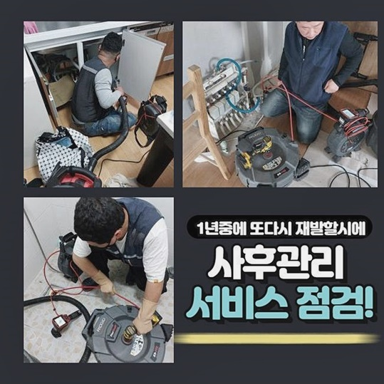
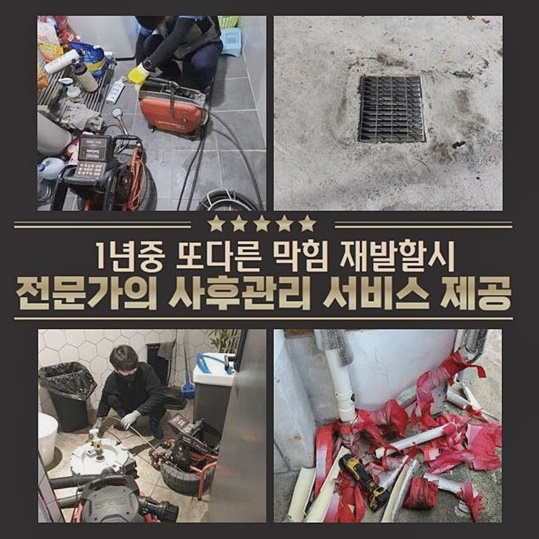
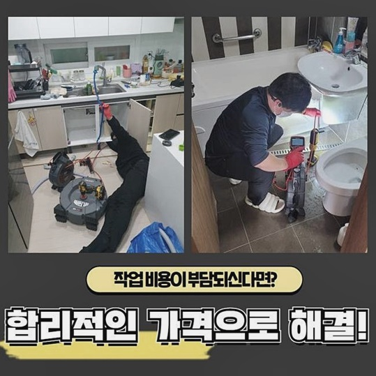
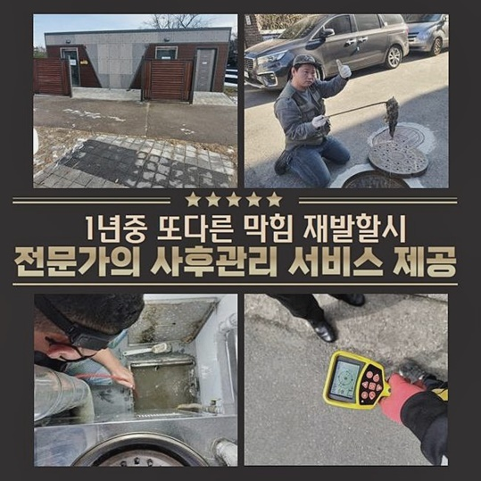
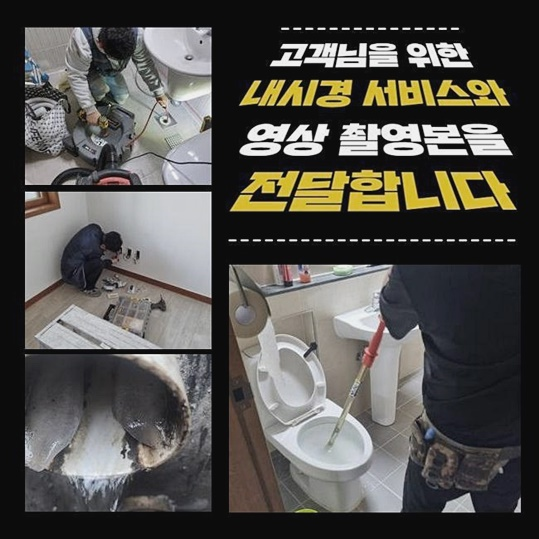
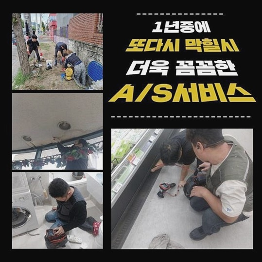
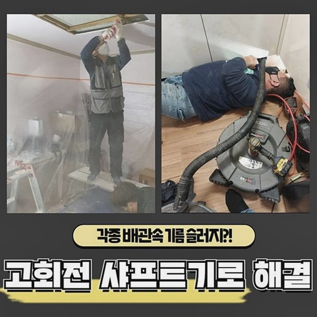

🏠 광진구 능동싱크대배수구막힘 화양동 하수구뚫어주는업체 누수탐지
용인 싱크대막힘 전문 시공 후기

📋 작업 개요
- 위치: 용인
- 서비스 유형: 싱크대막힘, 변기막힘, 하수구막힘, 배관막힘, 누수수리, 역류해결, 뚫는업체, 고압세척, 설비공사
- 작업 일시: 2024. 6. 7. 17:38
- 업체명: 하수구수사대 (010-5615-2118)
🔍 문제 상황
광진구 능동싱크대배수구막힘 화양동 하수구뚫어주는업체 누수탐지
전지역어디라도 내방가능한 하수구뚫는 전문회사에요
저희회사는 시간상관없이 상담과출장이 가능하고 하수도를 뚫는것만이아닌 배관공사와 고압세척까지 다양스러운 수리작업을 진행하고있죠
이번시간에는 며칠전에 수리했었던 작업사례를 통하여 하수구막힘에 대하여 설명드리고자하니 살펴봐주시길 바랍니다!
오늘 방문드린곳은 의뢰자분이 인터넷에서 검색하여 전화주신 의뢰였답니다
배수가 정상적이지않아서 불편함이 느껴진다고 하셨으므로 연락을받고 빨리 출동했어요
막힘현상이 나타난곳은 욕실쪽이라고 말씀하셨죠
본격적으로 작업하기전에 간단히 설명드리면 대개로 화장실쪽 배관이 막히게되는것은 두개의원인으로 나눌수있어요
1번째로는 머리감거나 씻을때 화장실이용시 자연적으로 발생하는 머리카락처럼 잔여물들로 인해서 막히게되는것이고 두번째로는 고착물로인한 막힘입니다
이렇다면 오늘의장소는 무슨이유로 막힌걸까요
당사자분께서 하수관에 역류한 물을빼려고 여러시도를 하셨는지 바닥쪽은 물이흥건히 고여있었죠

🔎 원인 분석
💡 전문가 진단: 정밀 진단 장비를 사용하여 슬러지의 고착 여부를 판명하고 타격/세척 작업을 실시했습니다.
하수구에서 막힘이 발생하면 클리너제품같은 도구를통해서 직접해결하고자해요
그치만 이런방식이 일시로 뚫리게될수 있겠지만 배관속에 오염물질이 자리잡았다면 자기만의 방법보단 전문기사를 초빙하는것을 추천드립니다
잘못건드려서 배관파손이 발생될수있고 결국에는 다른세대들까지 피해를끼칠수있기에 삼가하시는게 좋겠죠
이번현장에서는 손상이 보이지않았기에 우선은 석션기를 통하여 역류한물과 하수구입구에 이물질들부터 차례에맞게 제거시키기로 했답니다
진행해봤으나 잔여물들만 조금나올뿐 배관내부쪽 이물질들은 빠지지않아서 변함없이 배수가되지 않고있는 상태였답니다
단단히굳은 석회물로 추측되었어요
단순히기계만을 통하여 뚫으려고하는것은 한계가있다보니 고착물을 녹여주는 약품을사용해 진행하고자 했습니다
석회물의경우 세면대나 욕실등등 물을쓰는곳이면 어디에서나 발생할수있는 성분이므로 욕실배수구막힘의 증세들로 발현되는일이 대다수랍니다
지속하여 쌓이게된다면 돌처럼딱딱해져 물이흐르는걸 방해하게되며 역류문제나 막힘상태까지 유발하게해요
오랜시간이 지난곳일수록 이러한증세가 잦게 발생하는데 시간이흐르면서 조금조금씩 퇴적되기 때문이에요
다행인것은순조롭게 석회물이 누그러져있었기에 내시경기계를 통해서 배관내부쪽을 확인할수있었어요
내시경장비란 기계이름대로 배관속을 확인시켜주는 기계에요!

🔧 작업 과정
내시경과 연결된줄을 배수구안에 집어넣은후 촬영하기때문에 사람눈으로 보이지않는위치도 세밀하게 살펴볼수가있습니다
막혀있는상황을 체크할수있으니 조속한해결과 이해할수있는 작업비를 산출할수있어요
모니터화면으로 확인해보니 예상대로 고착물질들이 배관벽쪽에 붙어서 끼어버린형태가 확인되었어요
오랜기간 굳어져서 석션장비만을 사용하는것은 한계가있습니다
그렇기때문에 플렉스샤프트라고 불리우는 기기를 이용해보겠습니다!
샤프트기란 빙빙돌며 배관내부에 접착된 굳은물질을 분쇄하여 소거하는방식의 전문장비죠
역류원인이었던 굳어진 이물질들까지 전부 제거할수있어요
제거작업중 거듭하여 내시경카메라로 배관안을 확인하고 얼마정도 소거가되었나 체크해줘야해요
체크하던중에 남은이물이 있게되면 재차 샤프트장비로 제거시켜야만 깔끔한수리가 이루어진답니다
배관벽에 달라붙은 잔해물을 떼어내고나면 아까전에 소개해드렸던 석션장비로 하수관에 이물질들이 남겨지지않게 분쇄완료된 잔여물질들을 빨아올려 없애버립니다
이런빌미로 작업에 착수할땐 전문기계들이 전체적으로 사용되야만 확실히 뚫을수있어요
세척작업을 마쳤으면 역류증상이 해결되었는지를 살펴봐야겠죠
배수상태가 정상적인지 배수검수를 해보았습니다
멈춤없이 깔끔히 배수가되는것을 확인할수있었죠
테스트결과 빠지지못하고 역류한다면 하수관내에 잔해물이 남아있다는 뜻이므로 최종검사단계라고 말할수있습니다
별증상없이 배수가되는걸 의뢰자와함께 확인해보았죠
모든계획들이 완료되었죠
상당한양의 고착물들을 볼수가있었는데 이러한물질들이 배관속을 막아버렸으니 배수흐름이 원활하게 이뤄지지 못한거랍니다
저희들이 깔끔히 해결해드렸으니 막힐우려없이 편하게 이용하시면됩니다


✅ 작업 완료
좀더 설명드리면 변기배관이 막히는것은 근원적인이유를 없애지못하면 재발문제에서 자유롭지못해요
그치만 많은고객들이 저희들처럼 전문회사를 호출하시기보다는 뚫어뻥이라든지 주변마트에서 판매하고있는 약품같은걸로 해결하려는 경우가많아요
앞에 말씀드렸다싶이 이런방법은 더큰손해를 일으킬수있으니 전문기사에게 의뢰하여 해결해보세요!
어떠한현장이든 1시간안에 도착가능하고 의뢰자의 의견을 먼저 고려하고있으니 걱정마시길 바래요
이외에도 궁금한게있으면 시간관계없이 마음편히 문의해주시고 오늘의 포스팅글도 마치겠습니다!




⚠️ 베란다 누수 및 방수 관리 방법
- ✅ 비가 많이 올 때 창틀 주변이나 아래층 천장에 얼룩이 생기는지 정기적으로 확인해 보세요.
- ✅ 우수관 주변 실리콘 마감이 들뜨거나 깨진 틈새가 있는지 손상 여부를 수시로 체크하세요.
- ✅ 베란다 바닥 타일의 줄눈(메지)이 소실되면 그 틈으로 물이 침투하여 누수가 유발됩니다.
- ✅ 누수 의심 증상 발견 시 방치하면 아래층 손실이 커지므로 즉시 전문가의 진단을 받으십시오.
💡 핵심 정리
- 확실한 장비 작업(내시경 점검 및 샤프트 스케일링)으로 원인을 뿌리 뽑습니다.
- 작업 후 1년 이내에 동일한 부위 재발 시 100% 무상 A/S 서비스를 보장합니다.
- 서울 · 경기 · 인천 전 지역에 24시간 언제든 긴급 출동할 수 있도록 항시 대기 중입니다.
❓ 자주 묻는 질문 (FAQ)
🚨 용인 싱크대막힘 문제로 고민이신가요?
정확한 원인 진단과 확실한 시공으로 재발 없는 해결을 약속드립니다.
24시간 긴급 출동 | 서울 · 경기 · 인천 전지역 | 1년 내 재발 시 무상 A/S